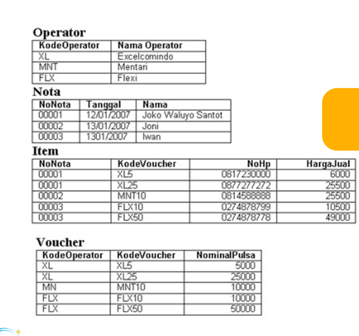

Halo, para pejuang kode!
Sebagai mahasiswa Teknik Informatika, saya tahu betul betapa pentingnya memahami dasar-dasar perancangan database. Salah satu konsep paling fundamental namun esensial adalah Entity-Relationship Diagram atau ERD.
Di postingan kali ini, kita akan mengupas tuntas tiga komponen inti dari ERD: Entitas, Atribut, dan Relasi.
Apa itu Entitas?
Anggap saja entitas itu sebagai kata benda. Entitas adalah setiap objek, orang, tempat, atau kejadian yang datanya ingin kita simpan. Dalam sebuah database, entitas biasanya direpresentasikan sebagai sebuah tabel.
Satu aturan penting, sebuah entitas harus merupakan kumpulan dari objek yang sejenis. Contohnya, satu orang mahasiswa bukanlah entitas, tetapi kumpulan dari seluruh "Mahasiswa" adalah sebuah entitas.
Studi Kasus
Mari kita lihat contoh kasus dari sebuah sistem penjualan pulsa sederhana seperti pada gambar di bawah ini.
 Gambar di atas merupakan contoh Entity-Relationship DiagramDari gambar tersebut, kita bisa mengidentifikasi beberapa entitas:
- Operator Ini adalah tabel yang menyimpan data spesifik tentang para operator seluler (misalnya, Excelcomindo, Mentari)
- Nota Tabel ini menyimpan informasi tentang setiap transaksi penjualan yang terjadi.
- Voucher: Entitas ini berisi data mengenai jenis-jenis voucher pulsa yang tersedia.
- Item: Entitas ini mencatat rincian voucher apa saja yang terjual dalam setiap transaksi di nota.
Apa itu Atribut?
Jika entitas adalah kata benda, maka atribut adalah kata sifat atau karakteristik yang mendeskripsikan entitas tersebut. Setiap atribut memberikan sebuah informasi detail mengenai entitasnya. Dalam tabel database, atribut direpresentasikan oleh kolom.
Setiap entitas pasti memiliki atribut. Mari kita bedah atribut dari salah satu entitas pada studi kasus kita:
Entitas: Operator
- KodeOperator: Ini adalah atribut yang berfungsi sebagai pengenal unik untuk setiap operator (contoh: XL, MNT, FLX). Atribut seperti ini sering disebut sebagai Primary Key.
- NamaOperator: Atribut ini menyimpan nama lengkap dari operator (contoh: Excelcomindo, Flexi).
Begitu pula dengan entitas Voucher, atributnya adalah KodeOperator, KodeVoucher, dan NominalPulsa. Setiap kolom pada sebuah tabel adalah atribut yang menjelaskan entitas tersebut.
Apa itu Relasi?
Relasi atau hubungan bisa kita anggap sebagai kata kerja. Relasi menunjukkan bagaimana dua atau lebih entitas saling terhubung atau berinteraksi. Relasi sangat krusial karena inilah yang menggambarkan bagaimana bagian-bagian berbeda dari database kita saling berkomunikasi.
Dalam ERD, relasi biasanya digambarkan dengan garis yang menghubungkan entitas-entitas tersebut. Ada beberapa jenis relasi yang umum ditemui:
- Operator dan Voucher: Sebuah
OPeratormemiliki satu atau lebihVoucher. Koneksi antara keduanya adalah atributKodeOperatoryang ada di kedua tabel. Ini adalah contoh relasi One-to-Many (satu ke banyak), di mana satu operator bisa memiliki banyak jenis voucher, tetapi satu jenis voucher hanya dimiliki oleh satu operator. - Nota dan Item: Setiap
Nota(struk) terdiri dari satu atau lebihItempenjualan. AtributNoNotamenghubungkan kedua entitas ini. Satu transaksi (Nota) bisa mencakup pembelian beberapa item (voucher). Ini juga merupakan relasi One-to-Many. - Item dan Voucher: Setiap
Itempenjualan mengacu pada sebuah Voucher spesifik. Relasi ini terbentuk melalui KodeVoucher yang menghubungkan tabel Item ke tabel Voucher untuk mendapatkan detail seperti nominal pulsanya.
Dengan mendefinisikan relasi-relasi ini, kita bisa melakukan query atau pencarian data yang kompleks, misalnya: "Tampilkan semua voucher yang dibeli pada nota milik Joko Waluyo Santoso." Database akan menavigasi dari tabel Nota, ke tabel Item, lalu ke tabel Voucher untuk menemukan jawabannya.
Itu dia penjelasannya! Memahami Entitas (tabel), Atribut (kolom), dan Relasi (penghubung antar tabel) adalah langkah besar pertama untuk menguasai desain database menggunakan ERD. Dengan mengidentifikasi ketiga komponen ini secara tepat, kamu bisa membangun database yang logis, efisien, dan mudah dikembangkan untuk aplikasi apa pun.